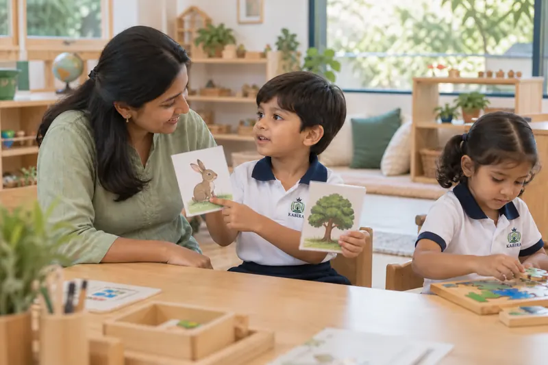
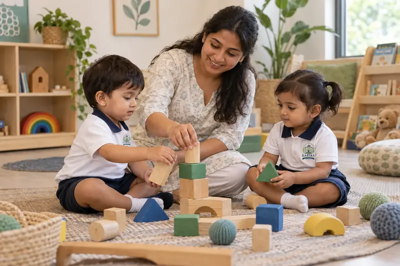
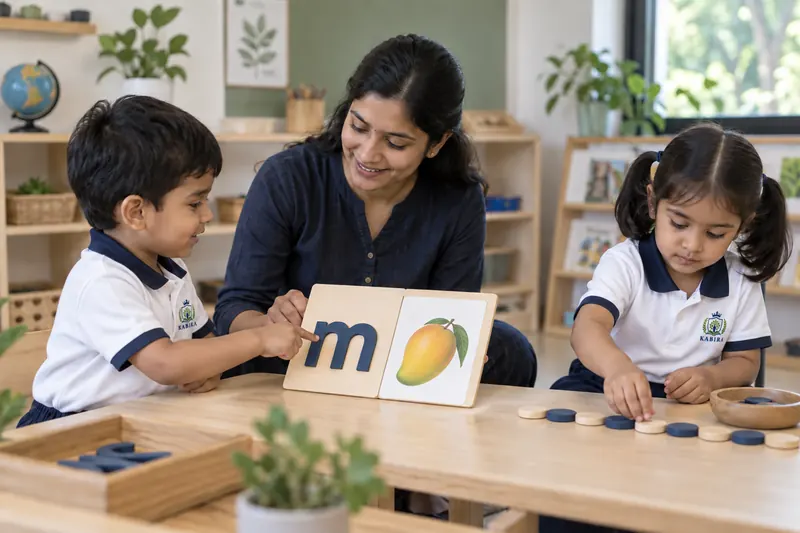
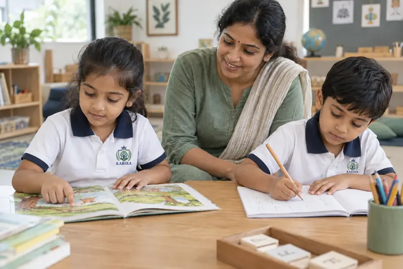

INCLUSIVE LEARNING AT KABIRA
Every child should be known,
understood, and given room to grow.
At Kabira, inclusive learning means two things. It means recognising that every child in every classroom has their own pace, their own way of settling, their own strengths and areas that need encouragement. And it means being thoughtful and honest when a child may need something more than a standard classroom can offer.
WHAT INCLUSION MEANS AT KABIRA
Two connected
ideas.
Every child learns differently.
Children vary in how quickly they settle, how they communicate, what catches their attention and where they need encouragement. Some are vocal from day one; others take weeks to feel comfortable enough to join in. A classroom that ignores those differences doesn’t serve any child well. At Kabira, teachers are encouraged to notice — not to compare or categorise, but to understand each child as an individual.
Additional support when needed.
Some children may need more than attentive teaching. Where a family feels their child has particular learning or developmental needs, Kabira aims to have that conversation honestly — before admission, not after — to understand what realistic, appropriate support looks like within a preschool setting. We would rather understand first than make a promise we cannot keep.
WHOLE-CHILD DEVELOPMENT
The whole child.
All of it matters.
Early development is not one subject. It is several areas growing together — and progress in one area often depends on how things are going in another. This is how Kabira thinks about each child’s growth, in the classroom and beyond.
- LANGUAGE & COMMUNICATION
Listening, speaking, vocabulary and early literacy — growing through conversation, stories and daily interaction with teachers and peers.
- EARLY NUMERACY & THINKING
Counting, patterns, comparison and simple reasoning — built through play and hands-on activity, not worksheets alone.
- PHYSICAL & MOTOR DEVELOPMENT
Movement, coordination and fine-motor skills — through active play, creative work and time to simply run and explore.
- SOCIAL & EMOTIONAL GROWTH
Sharing, turn-taking, friendship and emotional security — how children learn to be alongside other people, and to manage how they feel.
- CREATIVITY & EXPRESSION
Art, music, movement and imaginative play — how children say what they think and feel before they have all the words.
- VALUES & INDEPENDENCE
Good manners, self-help skills and a growing sense of responsibility — woven into everyday school life, inspired by Sant Kabir’s wisdom.
LEARNING AT AN INDIVIDUAL PACE
Same destination.
Different journeys.
Children grow toward confidence, communication and readiness — but not in a straight line, and not at the same moment. Some settle quickly; others take weeks. Some are talkative from the start; others need a quiet corner for a while. At Kabira, neither is seen as a problem. Both are simply children, learning in their own way.
Three paths — each a child’s own route, at their own pace — all moving toward the same growth. No route is better or faster. Each one is theirs.
HOW LEARNING HAPPENS AT KABIRA
Play, explore,
then understand.
Every classroom moment is built around how young children actually take in the world — through doing, asking, trying and expressing. Learning at Kabira is not about sitting still and absorbing information. It is a cycle that begins with curiosity and returns to it.
Stories, sensory activities, free exploration
Noticing, comparing, making connections
Questions, conversation, wondering aloud
Hands-on activity, practical learning, making
Ideas that stick, confidence that builds
Art, language, movement, showing what they know
HOW WE NOTICE AND SUPPORT
A classroom approach,
not a diagnosis.
This is not a formal process or a clinical pathway. It is simply how an attentive teacher thinks about any child who may need a little more encouragement, a different approach or a little more time.
Notice
Watch how each child participates, communicates and settles in the classroom
Understand
Learn what helps that child feel safe, comfortable and ready to engage
Support
Adjust encouragement, pacing and approach for that individual child
Observe
Continue watching — what is working, what still needs more time
Communicate
Share observations with the family, honestly and openly
Adapt
Refine the approach together — school and family, in step
ADDITIONAL LEARNING SUPPORT
Honest about
what we can offer.
Some children may need more structured individual support — perhaps related to language development, attention, sensory comfort or social readiness. When families share those needs with us, we take them seriously. We read any existing recommendations, understand what has already been tried and think carefully about what a small preschool can genuinely and consistently provide.
Kabira is a preschool, not a therapy centre or diagnostic service. We do not provide clinical therapy, speech therapy, occupational therapy, formal special-education certification or medical care. What we can offer is a caring, attentive environment, a willingness to adapt where we reasonably can, and an honest conversation about whether Kabira is the right fit for your child’s needs — before admission, not after.
THE CLASSROOM TEAM
A teacher who leads learning.
Support that looks after the day.
Each classroom at Kabira has a lead teacher responsible for learning, with dedicated classroom support through LKG — so day-to-day comfort and routine are attended to while the teacher focuses on individual children’s development. This structure matters for every child, and especially for children who need a little more attention and reassurance.
The class teacher
Leads learning, guides activities, notices individual progress and communicates with families. Responsible for the educational direction of the class and the development of each child in it.
Classroom support
Ensures children’s daily needs — settling, comfort, routine — are met throughout the school day, allowing the teacher to remain focused on learning while every child’s wellbeing is attended to.
WORKING WITH FAMILIES
A conversation,
not a form to fill in.
Parents and guardians know their child best. If your child has an existing plan, specialist recommendation or therapy programme, we ask you to share it with us — not to tick a box, but because it genuinely shapes how our classroom approach can work alongside it. We rely on that relationship throughout the year, not only during admission.

FIND YOUR CHILD’S STAGE
Each programme,
at its own pace.
Explore the programme that matches your child’s age to understand what the school day looks like and what they will develop at each stage.

Pre-Nursery
2+ yearsComfort, belonging and first discoveries.
Explore Pre-Nursery
Nursery
3+ yearsSorting, shapes and a growing voice.
Explore Nursery
LKG
4+ yearsLetters, patterns and early number sense.
Explore LKG
UKG
5+ yearsReading readiness, reasoning and independence.
Explore UKGLearning scenes are illustrative.
LET’S TALK BEFORE YOU DECIDE
Tell us about
your child.
If you would like to discuss your child’s individual needs before making any decision, our team is happy to talk. A conversation costs nothing and tells you a great deal about whether the school is right for your family.